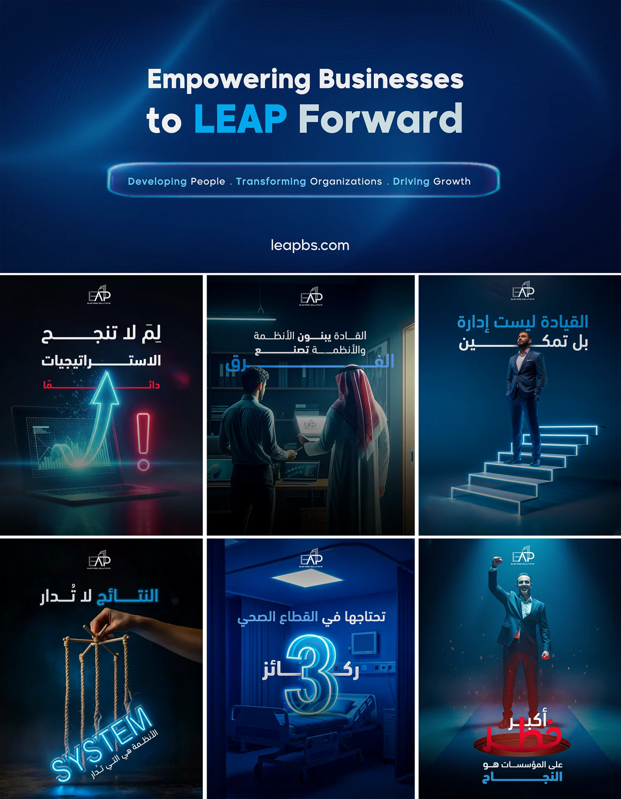
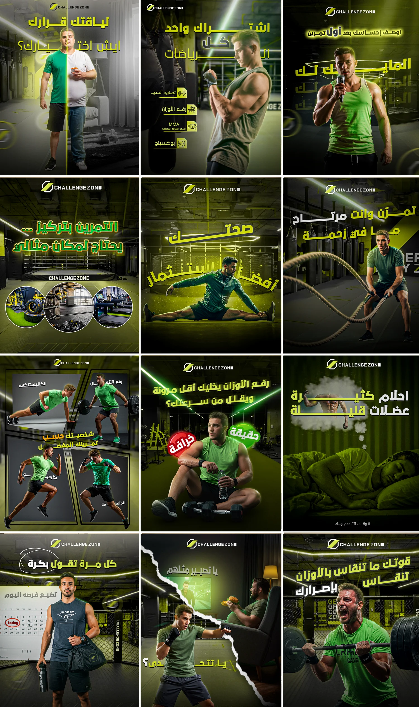
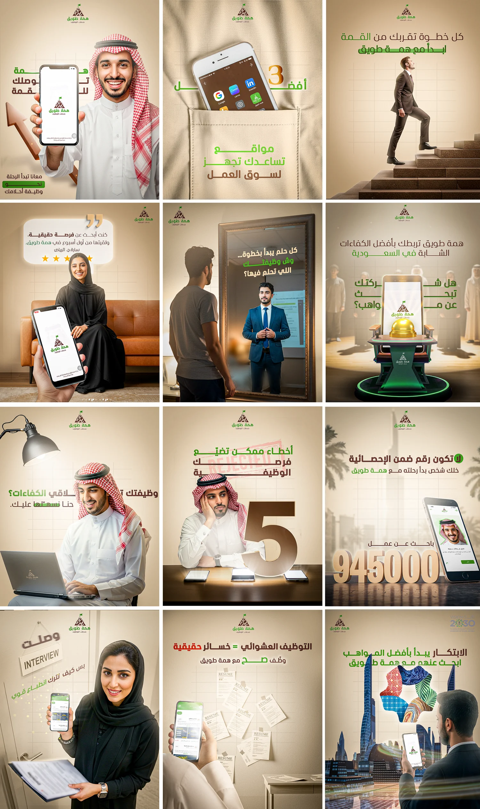
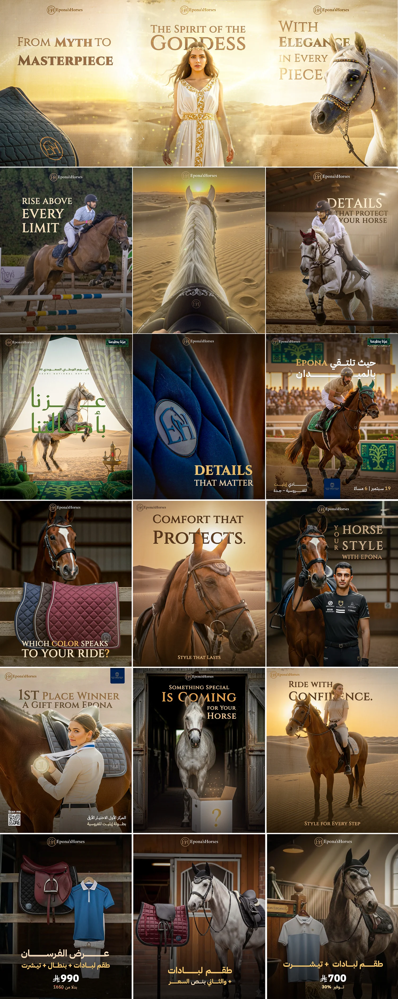
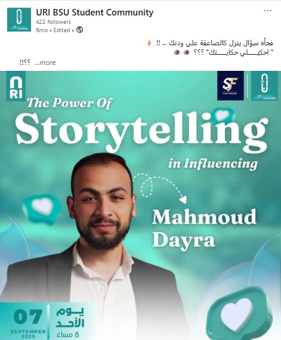
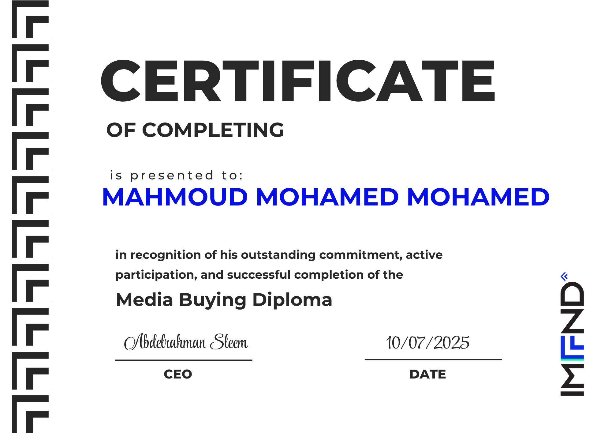
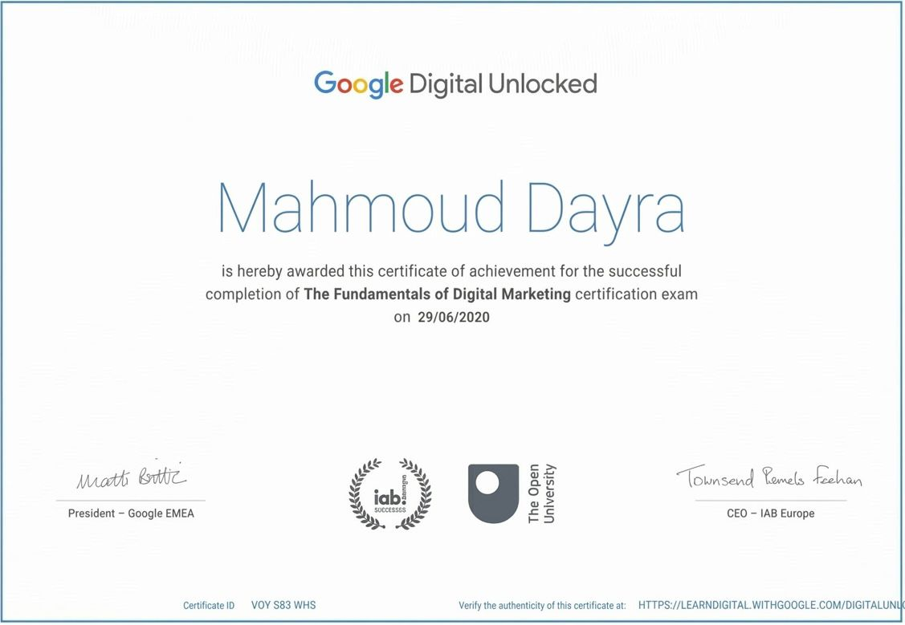
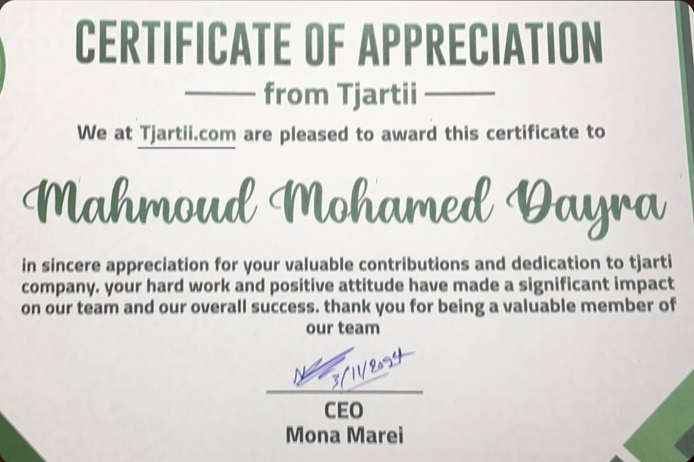
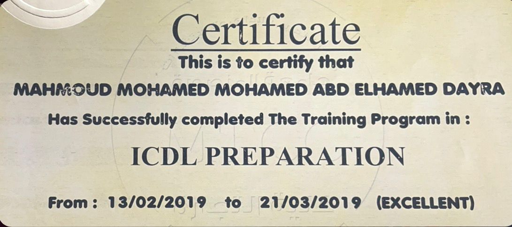

Scriptwriting
01 / SHORT-FORM
فكرة المنتج في أول ثواني
كتابة السكريبت: محمود دايرة
لنتيجـة تقنعك.
بدأت بكتابة حكايات الناس تقف عندها. النهارده، بربط المحتوى بالـData علشان كل قرار في الحملة يبقى له سبب.
مع Cartel، كنت ببني حضور علامة أزياء من الصفر: أفكار، محتوى، إطلاق منتجات، وكلام يومي مع الجمهور. هناك اتعلّمت إن المنتج لوحده مش الحكاية كلها؛ طريقة تقديمه بتفرق.
مش بس: إزاي أخلي الناس تشوف؟ لكن: إيه اللي يخلي الشخص المهتم ياخد الخطوة الجاية؟ من هنا بدأت رحلتي من الـContent للـMedia Buying.
دي فيديوهات كتبت سكريبتاتها وأنا شغال في السوشيال ميديا. دوري هنا كان كتابة السكريبت؛ التنفيذ البصري جزء من شغل الفريق.
كتابة السكريبت: محمود دايرة
كتابة السكريبت: محمود دايرة
كتابة السكريبت: محمود دايرة
نماذج من أعمال المحتوى والسوشيال ميديا؛ كل علامة لها صوتها وعالمها البصري.

كبّر الصورةحلول الأعمال

كبّر الصورةرياضة ولياقة

كبّر الصورةتوظيف ومسار مهني

كبّر الصورةالفروسية ومنتجات الخيل
ثلاث حكايات من شغلي، ومع كل واحدة الاسكرينات اللي توضّح نتيجتها.
الحساب كان مليان حملات بتقسّم الميزانية من غير اتجاه واضح. بدأت بتبسيط الهيكل، والتركيز على هدف الشراء، واختبار Broad Audience بدل تضييق الجمهور من البداية.
1 ديسمبر 2025 — 31 مارس 2026 · إنفاق 15,975.99 ريال. الحملة الرئيسية: 187 عملية شراء بعائد 5.61×؛ وأفضل مجموعة واسعة: 163 عملية شراء بعائد 6.16×.
في تطبيق خدمات منزلية، الطرفين محتاجين بعض. اخترنا نبدأ بالأسر، ونختبر الرسالة بحملتين App Installs. الهدف كان نثبت وجود طلب نقدر نبني عليه.
لوحة التطبيق: 1 يناير — 7 فبراير 2026. شاشة Meta: 1 يناير — 28 فبراير 2026، بإنفاق 1,488.15 ريال؛ تعرض الحملتان 1,073 و75 تثبيتًا. الأرقام تختلف باختلاف المنصة والفترة وطريقة الإسناد.
غيّرنا طريقة تقديم الملابس: محتوى UGC في سياق حقيقي، وإطلالات كاملة بدل قطع منفصلة. الفكرة كانت إن الشخص يشوف نفسه في المنتج، مش يشوف إعلان عنه وبس.
24 فبراير — 4 مارس 2026 · إنفاق 1,985.85 ريال. متوسط تكلفة الشراء 94.56 ريال. المجموعة ذات الـUGC سجلت 6 مشتريات بتكلفة 54.03 ريال للشراء؛ ومتوسط قيمة الطلب للحملة نحو 1,369.38 ريال.
سبتمبر 2025 — حتى الآن
Media Buyer
فبراير — سبتمبر 2025
Social Media Specialist
مارس 2024 — فبراير 2025
Social Media Specialist
يناير 2021 — مارس 2023
مؤسس وصانع محتوى
Campaign Structure، توزيع الميزانية، واختبارات الجمهور والكرييتف. مع GA4 وGTM وتتبع التحويلات علشان القرار يبقى مبني على اللي بيحصل فعلًا.

كبّر الصورةفي سيشن The Power of Storytelling in Influencing، اتكلمت مع طلاب URI BSU عن بناء الحكاية، والتعبير عن القيمة، واستخدام الـStorytelling في الشغل والـPersonal Branding.
مواد السيشن
كبّر الصورةIMND · يوليو 2025

كبّر الصورةGoogle Digital Unlocked · يونيو 2020

كبّر الصورةتقدير للمساهمة والالتزام مع الفريق

كبّر الصورةبرنامج تدريبي · فبراير — مارس 2019
عندك Brand محتاج اتجاه أو حملة محتاجة نظرة جديدة؟ احكيلي إحنا واقفين فين، وعايزين نوصل لإيه.